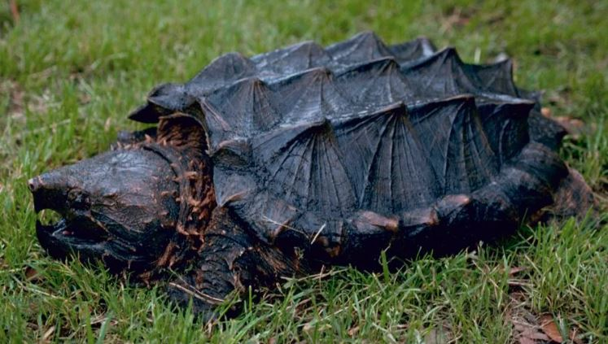
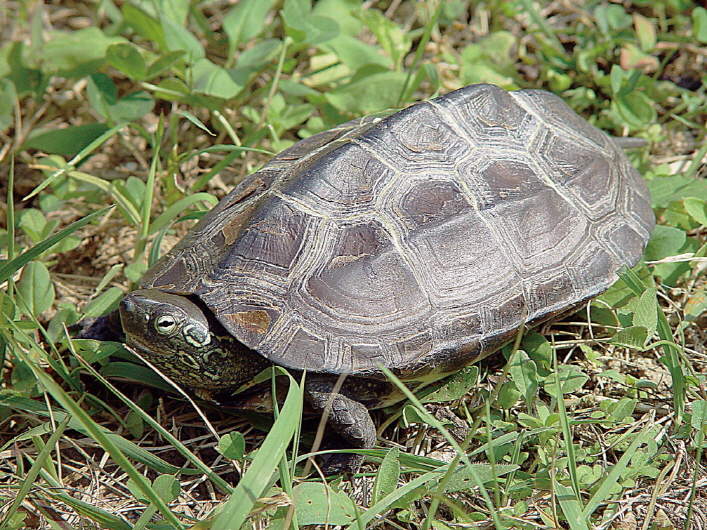
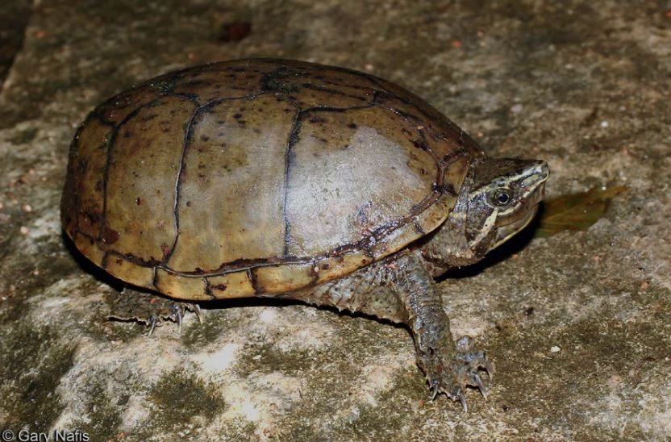
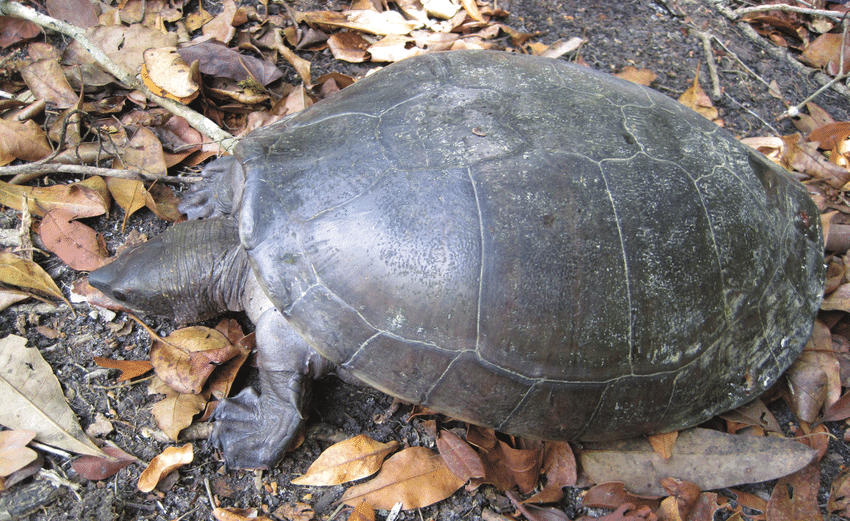
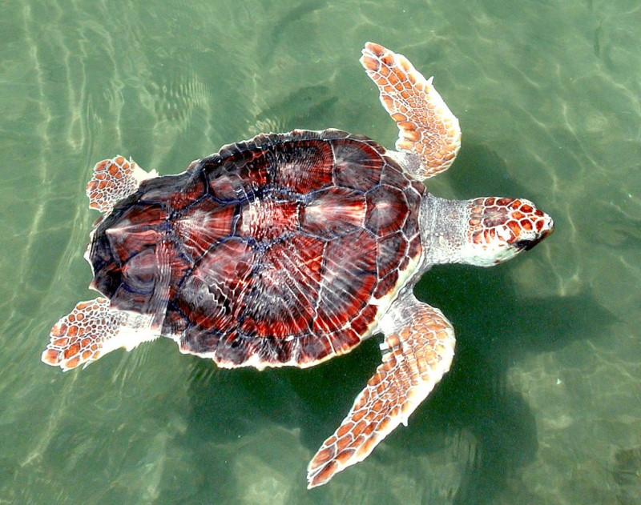
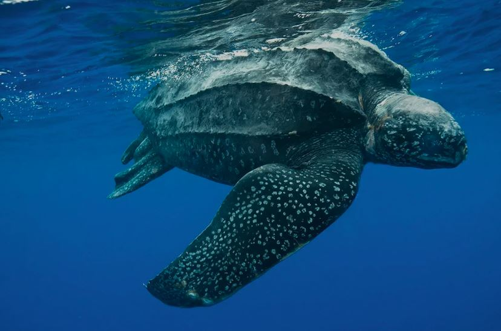
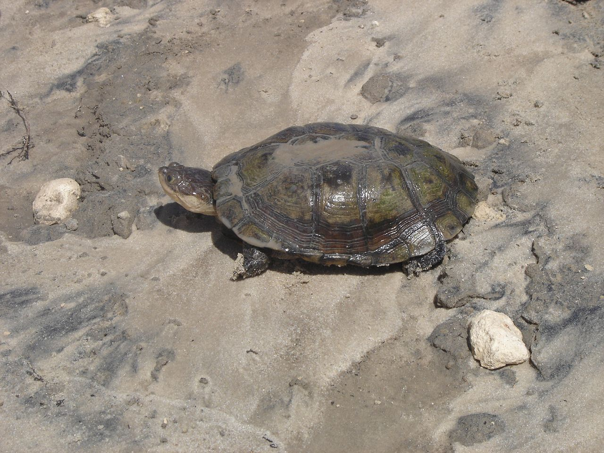

| 과 | 늑대거북과 | |
| 이름 | 늑대거북 | 악어거북 | 사진 |  |
 |
| 과 | 땅거북과 | |
| 이름 | 갈라파고스 거북 | 레오파드 육지거북 | 사진 |  |
 |
| 과 | 늪거북과 | |
| 이름 | 붉은귀거북 | 사진 |  |
| 과 | 돌거북과 | |
| 이름 | 남생이 | 사진 |  |
| 과 | 큰머리거북과 (1속1종) | |
| 이름 | 큰머리거북 | 사진 |  |
| 과 | 돼지코거북과 |
| 이름 | 돼지코거북(1속1종) | 사진 |  |
| 과 | 자라과 |
| 이름 | 자라 | 사진 |  |
| 과 | 풀거북과 |
| 이름 | 사향거북 | 사진 |  |
| 과 | 강거북과 |
| 이름 | 멕시코강거북 | 사진 |  |
| 과 | 바다거북과 |
| 이름 | 붉은바다거북 | 사진 |  |
| 과 | 장수거북과 |
| 이름 | 장수거북 | 사진 |  |
곡경아목
| 과 | 뱀목거북과 |
| 이름 | 뱀목거북 | 사진 |  |
| 과 | 가로목거북과 |
| 이름 | 늪가로목거북 | 사진 |  |
| 과 | 견목거북과(큰가로목거북과) |
| 이름 | 마다가스카르 큰머리거북 | 사진 |  |